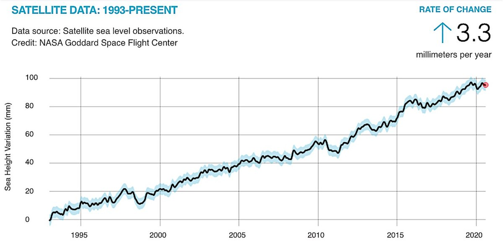
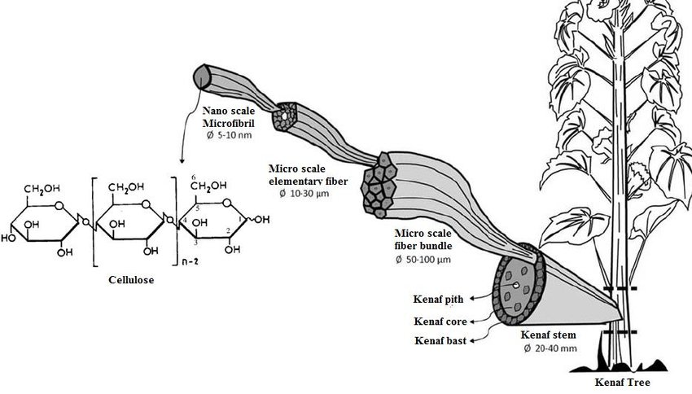
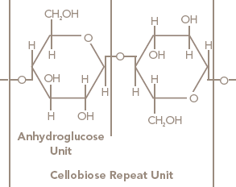

paper
1HOW IT'S A benefit
We can use wool,cotton seed and ramie bast to make paper it will lower the amount of trees cut down.That will decrease the air pollution that can help with global warming and also help use with water levels rising.

It can make the chart go down to about to 80 if we start using other thing that have cellulose fiber it can make it easier to start lowering the pollution in the air.
2HOW TO MAKE PAPER


Nov 12, 2010 — Cotton fibers are mainly made up of cellulose. ... Medium staple cotton is between 1” to 1-1/8” (2.54cm to 2.86cm) in length ... After ginning, the cotton goes to the bale press that packs it into 480-pound bales about ... hour, while some of today's more modern gins may process as many as 60 bales an hour.Cotton: 9,000-15,000
Fiber: average degree; of polymerization
Wood pulp: 600-1,500
Viscose rayon regular: 250-450
Cotton seed: 82,7-95,0
Ramie bast:67,0-99,0
From figuring out how many reams of paper are in a case to knowing what a quire, bundle, or bale is, paper only ... The modern standard for a bale of writing paper is 5,000 sheets. ... So there you have it: The next time somebody in the office inquires about how many reams of paper are in a case ... Can't find what you need?
From figuring out how many reams of paper are in a case to knowing what a quire, bundle, or bale is, paper only ... The modern standard for a bale of writing paper is 5,000 sheets. ... So there you have it: The next time somebody in the office inquires about how many reams of paper are in a case ... Can't find what you need?